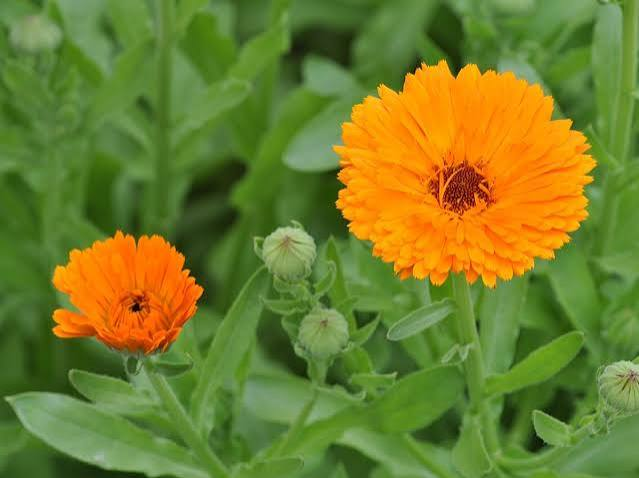

🌼 Identificação da Planta
Nome científico: Calendula officinalis
Família botânica: Asteraceae
Nome popular: Calêndula ou Maravilha
Tipo de planta: Ornamental
🌿 Características
A calêndula é uma planta ornamental conhecida por suas flores amarelas e alaranjadas. É muito apreciada em jardins, hortas e espaços educativos.
Suas flores deixam o ambiente mais bonito e ajudam os estudantes a aprenderem sobre a diversidade das plantas e a importância da natureza.
☀️ Como Cultivar
- ☀️ Prefere locais com boa luminosidade.
- 💧 Necessita de regas moderadas.
- 🌱 Gosta de solo fértil e bem drenado.
- 🌿 Pode ser cultivada em vasos, canteiros e pneus reciclados.
🐝 Importância para a Biodiversidade
Suas flores atraem abelhas e outros polinizadores, contribuindo para o equilíbrio do ambiente.
Na Horta Escolar Viva, representa a importância da relação entre plantas, animais pequenos e preservação da natureza.
🌼 Você Sabia?
A calêndula é conhecida popularmente como "maravilha" e suas flores possuem uma longa história de uso tradicional em cuidados naturais.
📱 Conheça mais sobre a Calêndula
Aponte a câmera do celular para o QR Code e descubra mais informações sobre esta planta.